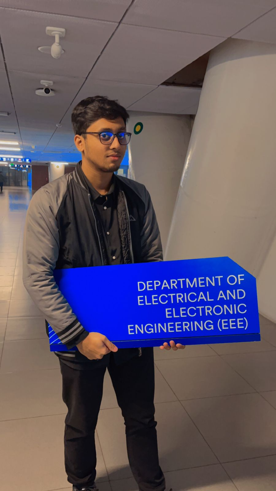

JCPSC
Jalalabad Cantonment Public School & College
Class 1-12 · Secondary and Higher Secondary Education
Completed 2019
About Me
I am an engineering professional with experience in project coordination, technical programme delivery, research operations and institutional engagement.

My story
My work brings together technical understanding, planning, communication and practical delivery. I currently work at FaboTronix Limited and am pursuing an MSc in GIS for Environment and Development.
I began learning graphic design in 2021 and started taking small freelance work in April 2022. That experience improved how I present technical ideas, organise information and communicate visually.
My current direction brings engineering and GIS together, with an interest in urban infrastructure, power reliability, coastal change and data-informed planning.
Academic background
Class 1-12 · Secondary and Higher Secondary Education
Completed 2019
Bachelor of Science in Electrical and Electronic Engineering
May 2020 - May 2025
Master of Science in GIS for Environment and Development
August 2025 - Present
Affiliations
The marks are kept simple so the page stays clean. Official logo files can replace them without changing the layout.
Engineer - Planning, Marketing & Training
Former Administrative Coordinator
EEE Graduate and Research Affiliation
Current MSc Student
Areas of work
Profiles
CV, publications and professional profiles are available through the links.